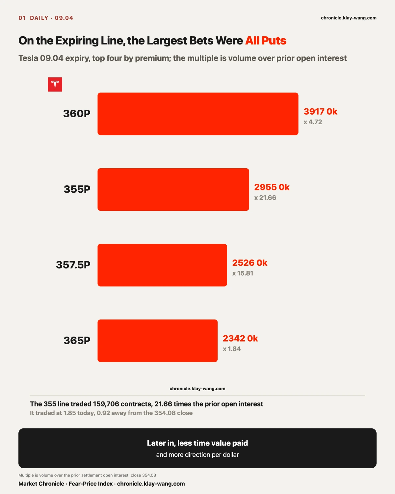
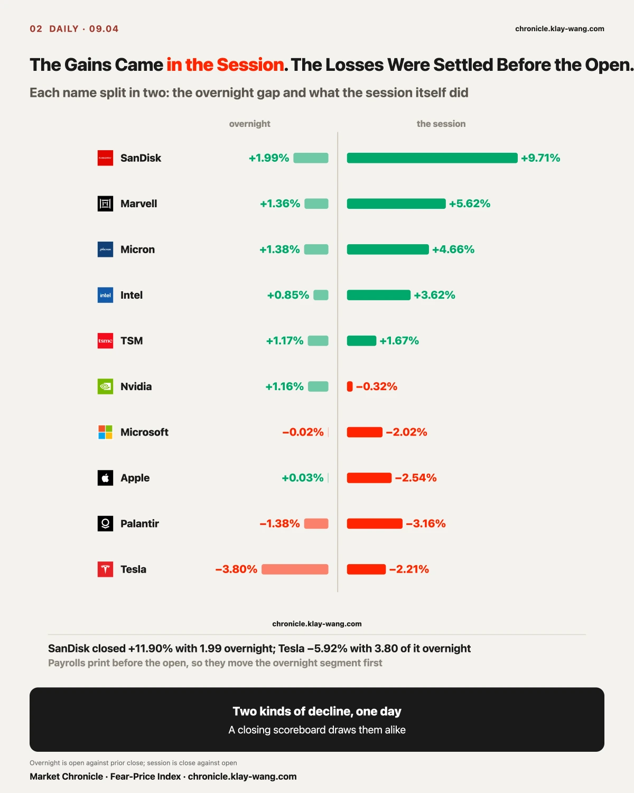
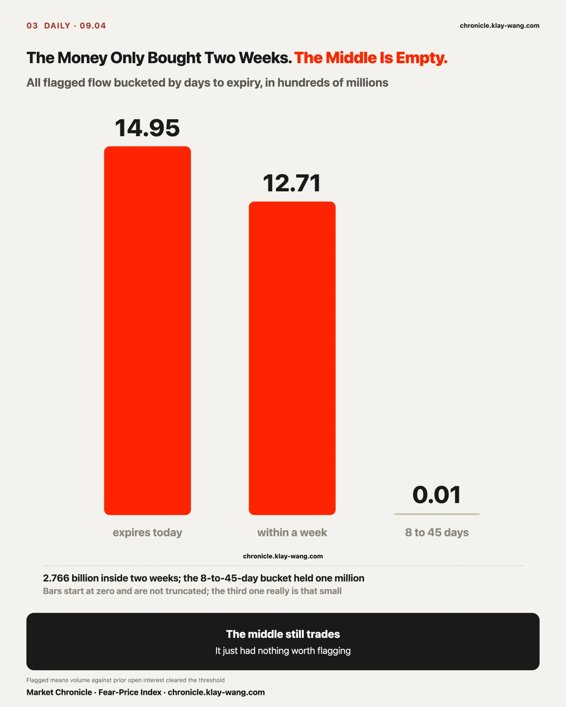
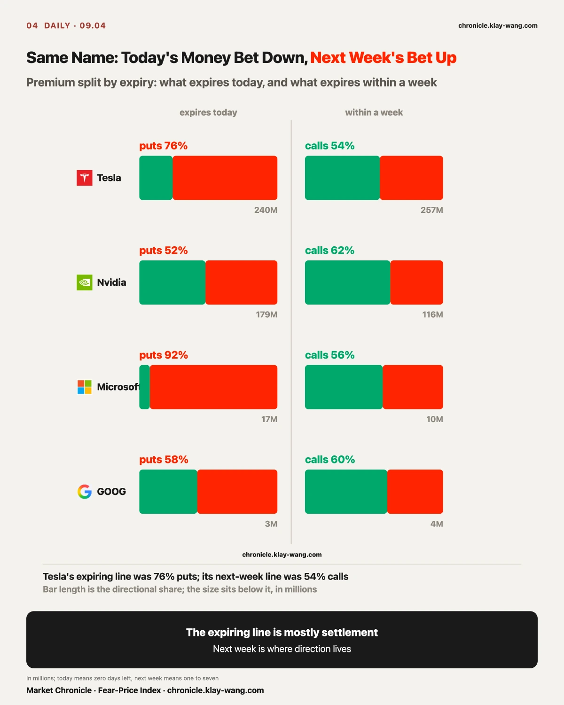
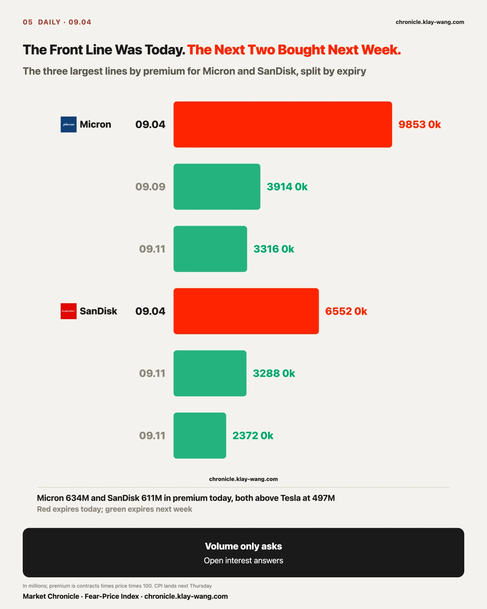
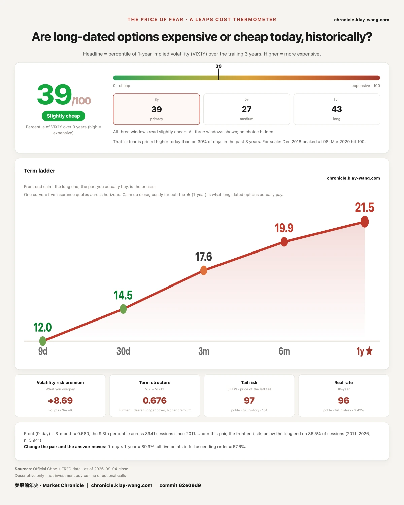

One. The same expiry can change sides twice in two days, and the winner is not the bigger side but the one that arrives last.
Two. The closing scoreboard draws two different declines the same way: one was settled before the open, the other was sold off through the session.
Three. A louder story is not the same as somebody paying for it. Payrolls came in at three times the forecast, and the price of rate insurance fell into the cheapest fifth of the last three years.

On 08.27 we logged nine strikes expiring 09.04. Today the stock closed 354.08. Three of them, 345, 350 and 352.5, finished in the money and the other six went to zero. Against their cost: 345 paid 1,432 and settled 908; 350 paid 1,113 and settled 408; 352.5 paid 963 and settled 158. Three in the money, none made its money back.
What came in today ran the other way. On the 09.04 expiry, the five largest lines by premium were all puts: 360P on 58,470 contracts for 39.17 million; 355P on 159,706 contracts, 21.66 times the prior day's open interest, for 29.55 million; 357.5P on 60,000 contracts at 15.81 times; 365P for 23.42 million.
Same expiry: on 09.02 the money leaned up, and on 09.04 it sat on the downside. The side that won was the one that arrived last. That is not one crowd changing its mind. Two days apart, it is a different crowd.

Payrolls print before the open, so the number moves the overnight segment first. Split each name into the overnight gap and the session itself and it reads plainly.
SanDisk closed up 11.90 percent with only 1.99 of it overnight and 9.71 in the session. Marvell 7.05 with 1.36 overnight. Micron 6.10 with 1.38. Intel 4.51 with 0.85.
For storage and chips the overnight move explains almost nothing. The buyers showed up after the bell.
The declines run the other way. Tesla closed down 5.92 percent with 3.80 of it overnight and a genuine downward gap. Apple fell 2.51 on the day while its overnight was plus 0.03, and Microsoft fell 2.04 on an overnight of minus 0.02.
Two kinds of decline in one session: Tesla's was settled before the open, while Apple and Microsoft were sold through the day. They look identical on a closing scoreboard and they are not the same event.

Bucket every flagged trade today by days left to expiry and the picture is clean: 1.495 billion expiring today, 1.271 billion inside a week, and one million in the eight-to-forty-five-day bucket.
The middle still trades. It simply had nothing worth flagging. The money bought today or it bought next week, and nobody touched what sits between.
That is worth a pause on its own. Eight to forty-five days is the ordinary holding period, and it is where earnings, rate decisions and CPI usually get priced ahead of time. Today it is close to empty, which says this market has stopped writing business a month out and is trading the next two weeks instead.
The two buckets also point different ways on the same name. Tesla ran 76 percent puts on the expiring line and 54 percent calls inside a week. Nvidia, 52 against 62. Microsoft, 92 against 56.
Those two layers are doing two different jobs. On the expiring line time value goes to zero the same day, so most of the volume is settlement and hedging: someone closing out, or buying one last piece of protection into the bell. It records what has already happened. The one-week line carries no such constraint, and anyone buying it has to wait, which means holding a view.
So the expiring line tells you about today. The next-week line tells you what somebody thinks comes after. Add them together and you manufacture a split that is not there.
It can be overturned: if Monday opens with the expiring line still on puts and the one-week line turning to puts as well, then the two-jobs reading fails and the direction genuinely flipped. We would rewrite this.

September 11 is the CPI print, and the number two independent sources named as the one that decides September 16.
Premium sitting on that 09.11 expiry today totals 708 million across seventeen names, 558 million on calls against 150 million on puts, so calls take 79 percent. Name by name: SanDisk 226 million at 85 percent calls, Micron 122 million at 83, Tesla 103 million at 70, Nvidia 66 million at 68, and Apple 37 million at 98 percent calls.
Everyone says CPI is the trigger, and the money expiring on trigger day is overwhelmingly betting up.
Two of the seventeen do not follow: Palantir at 37 percent calls and Microsoft at 46. The other fifteen all lean up, with Apple at 98 percent and Meta at 100.
It has two possible sources, and they point at completely different things. One is directional: a view that CPI comes in soft and the rate pressure lifts. The other is duller and more common: these are legs of covered or spread positions, with the offsetting side sitting somewhere the flagged table does not show.
Only one thing separates them, and that is Monday's settled open interest. If those call positions actually grew, it was new directional money. If volume was high and open interest did not move, it was intraday churn or a spread leg. Volume can only ask the question. Open interest answers it. We have used that sentence twice this week already, once settled (Palantir, five strikes with a median retention of 59.4 percent) and once still unmeasured.
That everyone-betting-up has one exception, and it is a conspicuous one.
Palantir fell 4.49 percent today. Its three largest expiring lines were all puts, with the 175 strike trading 52,845 contracts at 6.15 times prior open interest. On the 09.11 line it stays tilted down as well, 3.32 million on puts against 2.27 million on calls. It is the only name whose two tenors agree, and they agree on down.
Here is why that is conspicuous. On 09.02 the cluster we logged was precisely its 09.11 calls, five strikes with a median retention of 59.4 percent, new positions that stayed. Those long positions are still on the book, and today's new money sat on the other side.
Same name, same expiry, same strikes, and two crowds two weeks apart standing in opposite places. On 09.11 only one of them can be right.
On 09.11 both crowds settle on the same contracts, and the close decides it in one go.

August payrolls printed 162,000 against a forecast of 56,000, and July was revised from minus 23,000 to plus 21,000. The odds of a September hike went past sixty percent.
What has the market actually done about a hike? Three prices answer it without anyone having to say a word.
One, short-dated Treasuries barely moved, down 0.02 percent. That is the leg that should react first. If the market truly expected a hike sooner and harder than it had assumed, this is what gets sold. It was not sold.
Two, long Treasuries did not fall either. They rose 0.17 percent. A market genuinely worried about rates running away does not buy the long end on a payrolls day this strong.
Three, insurance on rates got cheaper for a second straight session. It reads 73.10 today against 74.68 yesterday and 79.71 on Wednesday, which puts it in the cheapest fifth of the last three years. Gold fell 0.84 percent that day, silver 1.21, and the dollar rose 0.25, so the risk side did move on rates.
All three point the same way: the market priced this hike some time ago. Its judgment now is that the arithmetic is settled and needs no further protection bought.
This does not mean there will be no hike. If they move on September 16 this paragraph still stands, because something already in the price does not require new insurance. What would break it is the other case, a hike followed by bonds falling hard and insurance jumping. That would mean the market had the arithmetic wrong, and we would have it wrong with them.
One more thing, to avoid a misread: cheap insurance says calm in the near term, not safety. On the same day, what equities pay for a crash sits in the most expensive three percent of its history. The near term is cheap. The tail is not.
It can be overturned: if the gauge lifts clearly after next week's CPI, the market was simply not treating payrolls as news, and this section needs rewriting.

Fear-Price Index · 2026-09-04 · reading 39.3/100: one-year volatility VIX1Y at 21.49, in the 39.3rd percentile of the past three years, where higher means more expensive. Daily ledger and definitions at chronicle.klay-wang.com
The term ladder reads 11.97 at nine days, 14.53 at thirty, 17.61 at three months, 19.89 at six and 21.49 at one year. The nine-day sits at 56 percent of the one-year. The price of a tail is 150.63, in the 96.7th percentile of its full history.
What got cheap is the near term, not the tail.